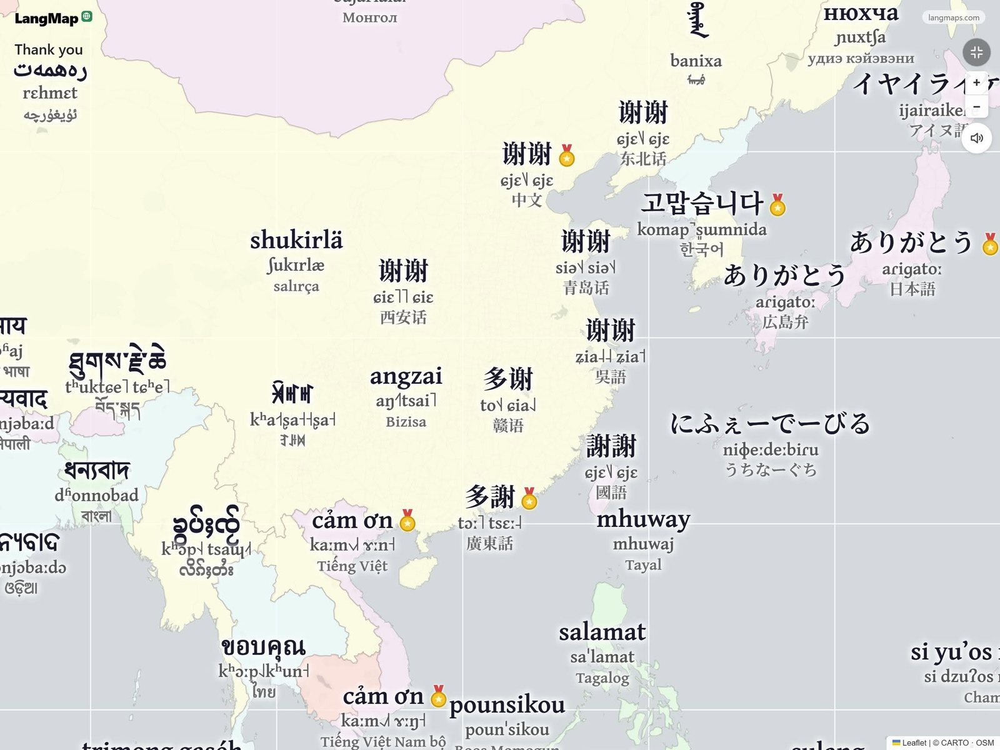

Thank You: One Feeling, Many Hidden Stories
- In Japanese, "thank you" originally described something almost impossible to find.
- In Cantonese, a gift and a glass of water call for different kinds of thanks.
- And two Chinese characters traveled all the way to Indonesia, even reaching people who never learned to write them.

Contents
Japan: Something too rare to exist
Japanese speakers say ありがとう (arigatō).
It comes from 有り難し (arigatashi):
有り: to exist
難し: difficult
Originally, it meant something rare or extraordinary.
Over time, it became "thank you."
As if someone's kindness were too precious to take for granted.
Despite a popular myth, arigatō has nothing to do with Portuguese obrigado. The Japanese expression is much older.
And Japanese has another curious word:
どうも (dōmo).
It can express thanks, serve as a greeting, or accompany an apology.
Sometimes, gratitude and apology are surprisingly close.
China: Not all thanks are the same
In Mandarin, people say:
谢谢 / 謝謝 (xièxie).
But Cantonese has an interesting distinction.
Someone gives you a present?
多謝 (do1 ze6)!
A waiter brings you water?
唔該 (m4 goi1)!
The first commonly thanks someone for gifts or compliments.
The second is often used for everyday help or services. It can also mean "please" or "excuse me."
Meanwhile, Taiwanese Hokkien uses:
多謝 (to-siā)
感謝 (kám-siā)
Different sounds, different customs, and several ways to express the same feeling.
Korea and Vietnam: Characters across borders
Korean has two familiar expressions:
감사합니다 (gamsahamnida)
and
고맙습니다 (gomapseumnida).
The first comes from 感謝, while the second is native Korean.
Japanese also uses 感謝 (kansha), although everyday thanks is usually arigatō.
Vietnamese takes a slightly different path:
cảm ơn / cám ơn
Both are connected to 感恩, "to feel kindness or grace."
The regular Sino-Vietnamese reading is cảm ân, but the everyday expression developed its own pronunciation.
Today, Vietnamese uses the Latin alphabet.
The characters have disappeared from ordinary writing. Their history has not.
When thanks crossed the ocean
The journey of 感謝 did not stop in East Asia.
In Indonesia, Hokkien 感謝 (kám-siā) survives as kamsia.
It is used in informal Chinese-influenced speech and sometimes crosses ethnic boundaries in communities with close Chinese and local contact.
The usual Indonesian expression remains terima kasih.
But kamsia shows something remarkable.
A Chinese word survived even where its characters were no longer used.
And the borrowing never stopped
Modern East Asian languages also borrow from English.
Japanese has サンキュー (sankyū).
Korean has 땡큐 (ttaengkyu).
Both are recognizable, casual adaptations of "thank you."
New words join older ones without necessarily replacing them.
A native Japanese expression, a Korean word, a Chinese-character compound, an English borrowing.
All can express gratitude, but each carries a different history and social tone.
Two characters, many voices
Look at the journey of 感謝:
Japanese: kansha
Korean: gamsa
Hokkien: kám-siā
Indonesian colloquial speech: kamsia
And alongside them live ありがとう, 謝謝, 唔該, 고맙습니다, and cảm ơn.
Some words crossed borders through writing.
Others traveled through conversation.
Some were borrowed centuries ago.
Others arrived much more recently.
Languages never stop borrowing ways to say thank you. But each makes gratitude sound unmistakably its own.